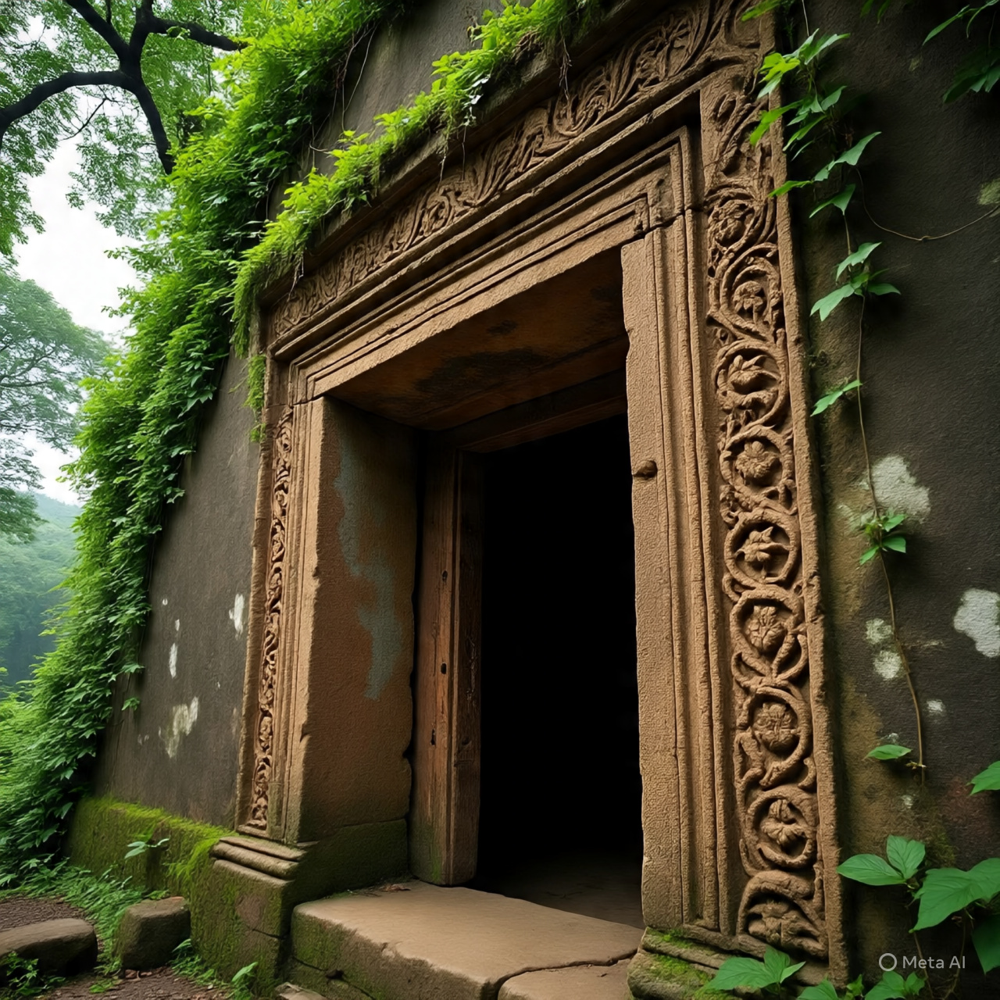

The Secret Escape Gate of Raigad Fort
Scroll Down
The Chor Darwaja (Secret Gate) was one of the most important hidden passages of Raigad Fort. It was used in emergencies to escape or launch surprise attacks against enemies. Its existence showed the strategic genius of Shivaji Maharaj.
This secret gate is located on the southern side of the fort. It is narrow, hidden behind rocky terrain, and opens into steep valleys below. Because of its position, it was almost impossible for enemies to detect or use it.
Chor Darwaja gave the Marathas a huge tactical advantage. In times of siege, it could be used for supplies, reinforcements, or safe evacuation. It also allowed secret movements without enemy knowledge.
Today, Chor Darwaja is a fascinating spot for trekkers and history lovers. The passage is partly ruined but still visible, reminding visitors of the clever military planning of Shivaji Maharaj’s era.